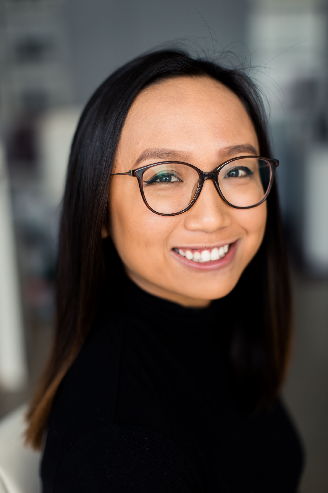

Louise Ibuna
Software Engineering Major | Chai Latte Lover | Women in Tech Advocate

Software Engineering Major | Chai Latte Lover | Women in Tech Advocate

I am receiving my degree in Software Engineering in June 2020 from Cal Poly San Luis Obispo. I'm experienced in software development, with an interest in automation engineering. I have a passion for empowering underrepresented minorities in tech. As a former community college student and Filipina in tech, I've experienced many setbacks in my education. Throughout my time in college, I've been involved in numerous organizations and events to inspire and be inspired by those who have these similarities. Outside of Software Engineering, I love to play video games and cook! I love to watch cooking videos on YouTube, as well as find new games to get me out of playing the same games (fun fact: I'm a huge Kingdom Hearts and Final Fantasy fan).